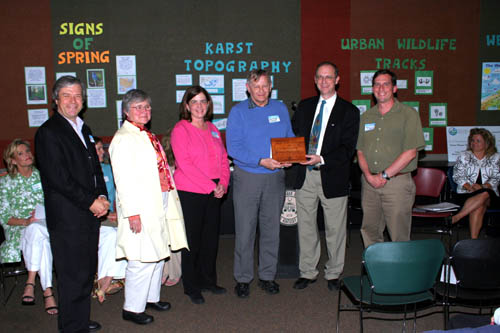

Community Health Impact Project, Public Health Issues
Dr. John Poundstone
Community Health Impact Project, Public Health
Tim Joice
KWA Stormwater BMP Geographic Information Systems
Dr. Amanda Gumbert
Science Advisor, Stream Buffer Restoration
Dr. Carmen Argouridis
Science Advisor, Stream Restoration
Dr. David Price
Water Quality Monitoring’/Field Equipment
Scott Southhall
Landscape Archetect, Stormwater Systems
Dr.Tom Kimmerrer
Science Advisor, Forest Ecology

Friends of Wolf Run Receive Kentucky Environmental Quality Commission’s 2006 Earth Day Award Pictured right to left: Ryan Slack, Vice President, Lyndell Ormsbee, EQC Chair, Bob Edwards, 2005 President, Frances Stokes, Treasurer, Judy Mahaffy, Public Affairs Director, Ken Cooke, Secretary.